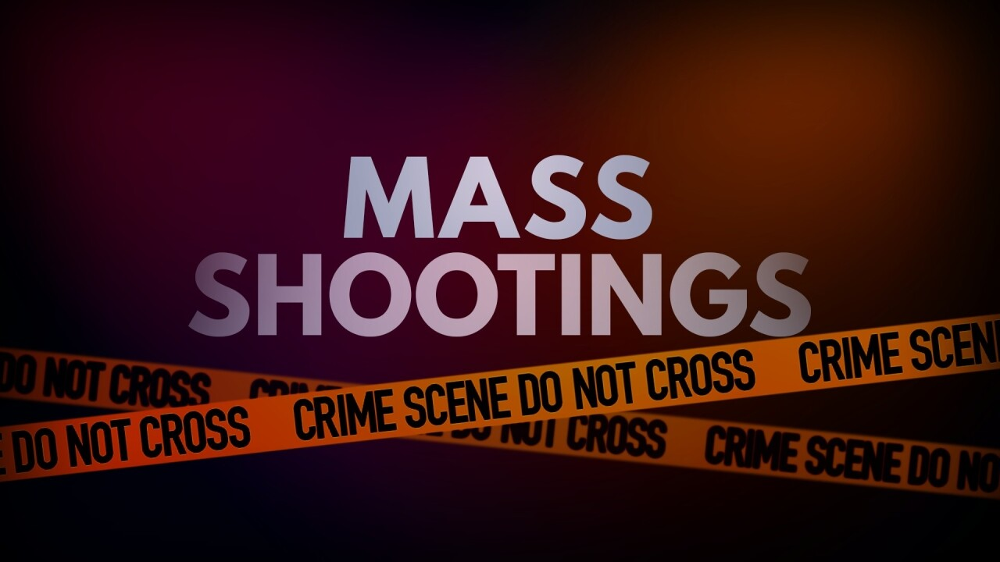

Society
What data says about mass shootings in the US?
Gun violence is a fixture in American life, but the issue is a highly political one, pitting gun control advocates against people who are fiercely protective of their right to bear arms. We've looked into some of the data behind firearms in the US and the results are alarming.
By Federico D. Teijeiro
July 21, 2023

Image digitally retouched by: Federico D. Teijeiro. Original image: Fox 29 WFLX.
In 57 years, 368 people were killed and 1,519 injured in mass shootings in the US.
Currently, mass shootings in the United States are once again a major issue due to the increase in the number of incidents in recent years. From the year 1966 to day, mass shootings have been on a constant rise across the country. According to the data, five mass shootings occurred so far this year on US soil. That's 71.23 percent of the total number of incidents in 2022 and 62.5 in 2021.
There is no single reason for this. However, there are several contributing factors, such as: easy access to firearms by citizens (due to relatively relaxed gun control laws in the US), increased mental health problems among the population, more people unemployed or in crisis (especially after the Coronavirus Pandemic); among others.
In overall, the centre of the United States recorded the least incidents. Although the states of: Texas, Colorado, Arkansay Mississippi stand out. In the east, among the most mass shootings suffered are: Kentucky, Florida, North Carolina, Pennsylvania; among others. In the west, the states of California, Nevada, Oregon and Washington.
In 1999, there was an increase in mass shootings compared to the previous 8 years. One of the reasons could be the notoriety that took the Columbine massacre on April 20. For the rest of the year, incidents escalated. In 2007, there was a record of deaths in mass shootings, which was only surpassed in 2016 and 2017, respectively. After a decline during 2020, by the measures of confinement by the Pandemic of the Coronavirus, the statistics rose again.
As we saw, there are ups and downs in annual incidents. The same happens in the months of each year and also in the seasons. Although the summer months are usually a little more violent. With regard to the days of the week, something similar happens; however they stand out on Mondays, Tuesdays and Wednesdays over the rest.
The 4th of July party sees most shootings than any other date on the calendar. For almost the last decade, there were more than 50 shootings on the Independence Day. The second most frequent day is the following day, July 5.
So far there have been at least 10 shootings on July 4 and 5, 2023, according to The Gun Violence Archive. Much of the information about each incident is preliminary, and the details (about the number or nature of the injuries, to mention an example) may change as the police investigate.
When we compare the decades, we can see that the frequency between one mass shooting and another is getting smaller. Currently, according to the data, an incident occurs every two months.